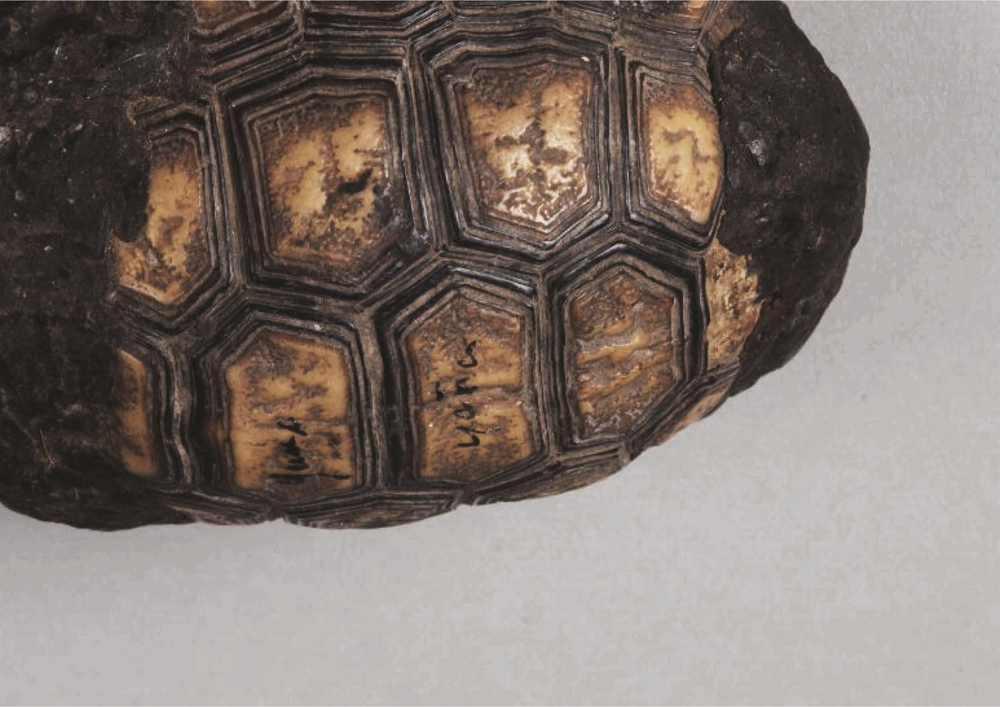

Sounding turtles of Paraguay
Sketch 012
Home > Blog A Musician's Log > Sketch 012
Turtle shells have been used for a long time in the five continents as raw material for the elaboration of different types of musical instruments.
Within the Chaco phyto-geographical area, specifically in present-day Paraguay, Luis Szarán documents the use of shells among the Ayoreo or Ayoréiode people (departments of Boquerón and Alto Paraguay), who make a rattle called xoxo with them, and among the neighboring Chamacoco or Yshyr people (department of Alto Paraguay). The latter use the shells of small turtles to construct the polarosho or polasho, a rattle for shamanic use (also made of hooves, seeds and/or conch shells) that is tied to the wrist or ankle or placed on a stick.
According to Guillermo Sequera, the Tomárâho shamans (a subgroup of the Chamacoco) would also use shells (of red-footed tortoises, Chelonoidis carbonaria, known as enermitak in Yshyr language) for their osecha or paikâra rattles.
More information about these sound artifacts can be found in the free-access digital book Turtle shells in traditional Latin American music, accessible through the "Digital books on music. Series 1" section.